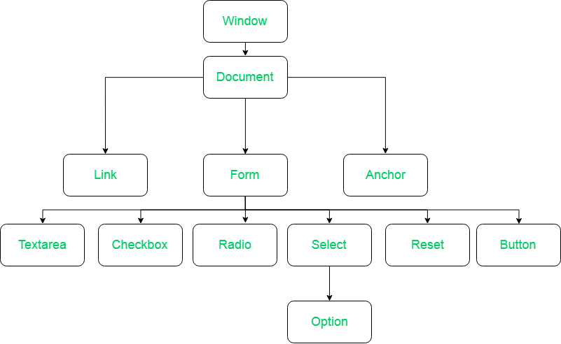

JS DOM Workshop
Introduction
What is DOM?
When a page is loaded, web browser creates a Document Object Model, so basically it's a tree of objects which contains the tags you have written in your html with attributes, properties.
What is Atrribute, Properties and OBJECT!?
What is the point of learning this at all!!?
OBJECT
Object is a data type, which can have several values known has attributes and properties, as well as functions which can accessed with this project. WTF!
A Example
Let's say you're an object.
You have properties, like skin colour, number of eyes,ears, hair colour. These are some values embedded in you!
You have functions embedded in you as well, like Sleeping(), Coding(), BingeWatchingNetflix(). :D
So, what if these HTML tags are objects, then these tags html tags can have some attributes and functions. Yes Lol, Web Browsers render tags as object, and object have child and parent objects as well.
Let's talk about HTML DOM MODEL
This tree starts with Window object which has a child, document object, and then this document object as html object which has HEAD, BODY objects.

Window Object
What the heck it is ???
So, wanna check it out? Open your console, and write
window.
You can see it contains properties of the browsers, like screen sizes.
Try it out!
Well, with this you can interact with localstorage as well.
It gives alot of power in the hands.!
Mini Task: Print browser screen size on console using window object ;)
Document Object
What the heck it is ???
So, wanna check it out? Open your console, and write
document.
This is parent object of your html file, you access the html objects with this, well we can manipulate whole html page with this!!
Try it out!
Animative,Interactive and more user friendly websites!
Mini Task: Use document object and capture a html tag and try to change it's background color!